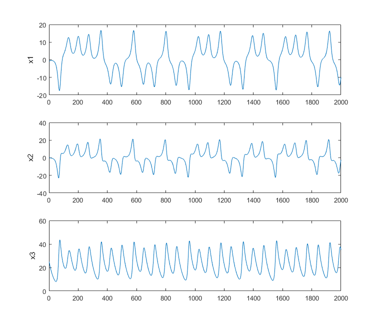
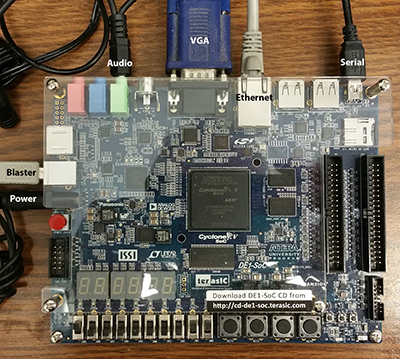

ECE 5760: Laboratory 1
Hardware ODE solver with HPS control.
Introduction.
For this exercise, you will simulate an Lorenz ODE system using a Digital Differential Analyzer (DDA) and control the function of the circuit with the HPS. The individual state variables of the solution will be plotted as a function of time on the VGA display. You can consider the DDA as a special purpose, reconfigurable, coprocessor controlled by the HPS. The DDA you write will be a bus-slave of the HPS.
Procedure:
Read the DDA page. After reading the page down through Second order system, stop. The integrator code that you want to use is in the snippet below. I suggest that with careful scaling you can use a fixed point format of something like 7.20, with a range of +/-63 and a delta of 10-6.
You will need to use a signed, fixed-point multiplier module, and an integrator module similar to the example in this this code snippet.
The arithmetic system will use 27-bit multiplies, which on our FPGAs take one hardware multiplier (DSP module). You could use floating point (and Floating DDA) instead, if you want to be slightly adventurous.
Relevant lectures from 2017 might be lectures 1 to 12.
But remember that lab 2 in 2017 is lab 1 today.
The physical system you will simulate is the chaotic Lorenz system shown below.
A 3D state variable animation of the trajectory shows one view of a solution.
The differential equations for this system are:
(dx1/dt) = sigma*(x2-x1)
(dx2/dt) =
x1*(rho-x3) - x2
(dx3/dt) = x1*x2 - beta*x3
Typical values for for constants might be
sigma = 10.0
beta = 8/3
rho = 28.0
with time step dt = 0.01
And initial conditions
x1 = -1
x2 = .1
x3 = 25
A matlab code provides a reference solution, to which you may compare your solutions.
But remember that your solutions will not match exactly because the system is chaotic.
One of the first steps for this lab is to simulate the solver hardware in ModelSim to produce something like the following.
The image is a typical output from the matlab program.

-- Development process for this exercise
- Start by simulating in Matlab!
On the FPGA you are going to be using simple Euler integration the Matlab program above is coded to use Euler integration so that you can directly compare the the FPGA solution. Make sure that for the constants and initial conditions that you choose that NO state variable (or intermediate result) goes outside the range
(+/-63).
- Next simulate your synthesizable verilog in Modelsim until you get the same result as you did in matlab. You will need to write a testbench which sets the same constants and initial conditions as in the matlab code. You can also estimate how to set up the output from the simulation. For example, how many compute cycles should there be per plotted point. One way to check the solver is to export the Modelsim solution vectors to matlab and use the function plot3 to make a 3D plot similar to the final frame of the animation of the trajectory.
--
Examples of exported Modelsim state-space, 3D plots, from students in 2018: 1, 2.
- When the compute module works, and you know the plot interval, you are ready to read back the solution to the HPS and do the 2D graphics to display the points for the three state variables.
- Test 2D drawing on the from the HPS to the VGA by drawing a sine wave data plot. A good place to start for HPS to VGA interface is to search for
Video VGA 640x480 displayed from SDRAM, in 16-bit color on the DE1-SoC: University Computer page.
- Connect your solver output to the HPS using parallel i/o port bus-slaves. In Qsys, remember to export the connections to the FPGA solver. Also remember that you have to assign unique addresses in Qsys to each PIO port and use those addresses in the C-code running on the HPS. A small example defines two PIO ports in Qsys, Displays counts on LEDs in Verilog, and controls the counts in C.
- When a hard-coded version plots correctly, build the PIO bus-slaves necessary to control reset function and set constants from the HPS, then start on the command software for console control. I suggest a simple command interpreter to enter the three constants, three initial conditions, start/stop, and reset. You will probably also signal a solution time step request from the HPS to synchronize the solver and the graphics.
- Remember that a parallel I/O port (PIO) which provides data from the HPS to the FPGA is an output! To get the PIO datasheet in Qsys, right-click the module name and in the pop-up menu, select details>datasheet. Some other modules require that you follow the path details>open_component_folder to get the datasheet.
--FPGA and HPS:
- Resources available on the Cyclone 5.
- External Bus to Avalon Bridge (external master)
- PIO bus-slave (see also Qsys design page)
- Using external buses
- For most exercises there will be 5 or six connections to the board:
Serial, ethernet, VGA, audio(for lab 2), USB blaster, power.

Examples from students, 2018
- Drawn on VGA by the HPS using FPGA Verilog hardware solver
By: Michael Henning, Max Rademacher and Jonathan Plattner
- Drawn in matlab from Verilog simulation of hardware 1, 2
- Video on VGA controlled by HPS using solver running on FPGA hardware.
By: Brian Clark, Eldar Slobodyan, Alex Wong
The solution is throttled down for display.
Assignment
-- Weekly check points
- Week 1:
--
Demonstrate the ODE solver written in synthesizable Verilog running in simulation in ModelSim.
The solver modules will be in synthesizable Verilog, but of course the test bench is not synthesizable.
-- Compare the three variables in simulation output to matlab output for the same parameters.
-- Export simulation data to Matlab and plot in 3D to show the state-space plot
of (x,y,z). Example state-space 3D plots from 2018: 1, 2.
- Week 2:
--
Demo the HPS drawing plots from the FPGA hardware ODE solver on the VGA.
The HPS should draw three graphs of the three variables versus time, as shown
in the student examples above.
-- Demo SignalTap OR HOLA connected to your solver to debug and display the three solution variables
and at least one control signal directly from the running hardware.
(use the HOLA version at the bottom of the page).
This part of the checkpoint is meant to ensure that you know how to use an on-chip logic analyser.
Later labs will assume that you know this.
- Week 3: demo full system below
-- Full System
- Build a DDA which simulates Lorenz system as described above.
-- The DDA will need to be connected to one or more Avalon Bus-Slaves for control by the HPS (see below)
-- The DDA output will be connected to Avalon Bus-Slaves for reading by the HPS.
- Monitor the the variables using a VGA output of 2D plots of (x1 , x2 , x3 ) generated by the HPS.
-- Scale the display so that the three plots use the VGA vertical resolution well.
-- Scale the drawing rate to show a few thousand 2D points on the VGA display.
-- The display should be dynamically updated
at a rate understandable to a human. See Video.
-- When the screen is full, it can either scroll (right-to-left), or start at the left edge and over-write
the existing data,
leaving a small blank region in front of the drawing point.
-- The display should be erased when the simulation is reset. It should freeze
when the simulation stops.
- Use a HPS C program to allow an operator to use a serial console to:
-- Set the three initial conditions of the simulation.
-- Set the three floating point constants and convert them to 27-bit fixed point.
-- Set the
time-step (in steps of 2).
-- Start/Stop the simulation.
-- Reset the simulation
Be prepared to demo your design to your TA in lab. You will be expected to show:
-- Set arbitrrary initial conditions and all three constants
--
Start/stop/reset solution.
-- The waveform display should not flicker
Your written lab report should include:
- Mathematical considerations (type of integrator, error expected/measured, approximations)
- A 3D plot of the solution vectors exported from the verilog simulator.
- Video screen shots of the VGA -- video emailed to TAs
- How you implemented the DDA circuits.
- A heavily commented listing of your Verilog design and GCC code.
Copyright Cornell University
January 28, 2019
{kind=link}
{kind=link}
{kind=link}
{kind=link}
{kind=link}
{kind=link}